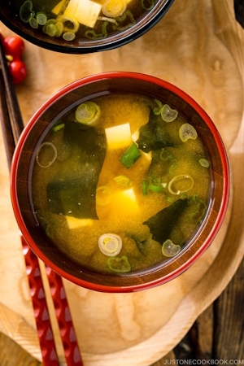

Back
Miso Soup

Description:
Miso soup is a staple in Japanese cuisine and the Soup for the Soul. We enjoy it almost every single day, for breakfast, lunch, or dinner.
Most Japanese meals are served with a small bowl of steamed rice and a traditional Japanese soup called Miso Soup (味噌汁). At its most basic, miso soup is simply made of 3 components:
Dashi (Japanese soup stock), Miso (soybean paste), Soup ingredients, such as tofu and wakame seaweed
Depending on the region, season, and personal preference, you can find many varieties of miso soup enjoyed in Japan. In addition to the classic tofu and wakame combination that I show you today, we also use different savory ingredients such as veggies, meat, and seafood to make the soup.
Ingredients:
- 7 oz soft/silken tofu (kinugoshi dofu)
- 4–5 Tbsp miso (use 1 Tbsp, 18 g for every 1 cup, 240 ml of dashi)
- 1 Tbsp dried wakame seaweed
- 1 green onion/scallion
Instruction Steps:
- Gather all the ingredients.
- Cut 1 green onion/scallion into thin rounds.
- Make and prepare the dashi for the soup.
- Add the dashi to the saucepan. If you are using dashi from the refrigerator, bring it to simmer over medium heat and turn off the heat.
- Add 4–5 Tbsp miso. Put the miso in a ladle, slowly add the dashi into the ladle, and stir with chopsticks to dissolve completely. Here, I‘m using a miso muddler. If you accidentally add too much miso, dilute the miso soup with dashi (or water).
- Here, I‘m using a fine-mesh miso strainer, which helps you dissolve the miso faster. After dissolving the miso in the strainer, you may see rice koji (especially when it‘s koji miso). It‘s up to you if you want to include it in the miso soup or discard it (personal preference).
- Cut 7 oz soft/silken tofu (kinugoshi dofu) into ½-inch (1.3 cm) cubes and add to the miso soup. Tip: Add the tofu after the miso is completely dissolved; otherwise, you might break the tofu when stirring in the miso.
- Add 1 Tbsp dried wakame seaweed to the pot. Reheat the miso soup until it is just hot. NEVER BOIL miso soup because it loses nutrients, flavor, and aroma. Add the chopped green onions right before serving to keep their fresh fragrance and color.